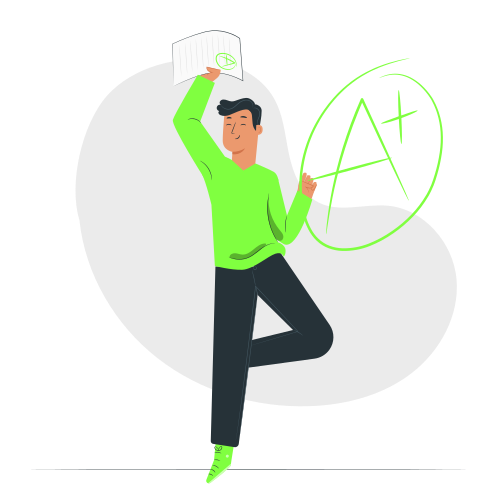

SQL Injection Detection and Prevention System
Protect modern web applications from one of the most critical cyber threats using our
AI-powered SQL Injection Detection System.
This platform leverages Machine Learning models, with a primary focus on
Random Forest classification, to intelligently analyze user inputs and identify
malicious SQL injection patterns in real time.
The system continuously monitors login attempts and input queries, distinguishing between
normal and malicious behavior. Upon repeated detection of suspicious SQL injection commands,
advanced security mechanisms such as email-based identity verification and
Google authentication are triggered to ensure authorized access.
This solution enhances application security, minimizes data breach risks, and provides a
smart, automated defense layer against SQL-based cyber attacks.